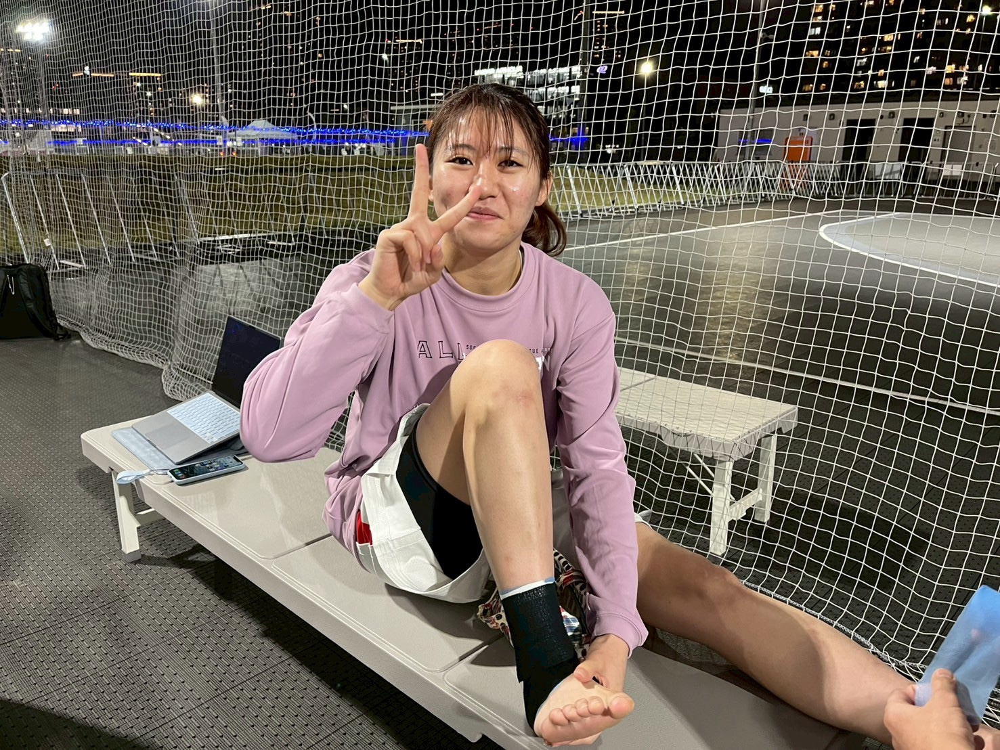
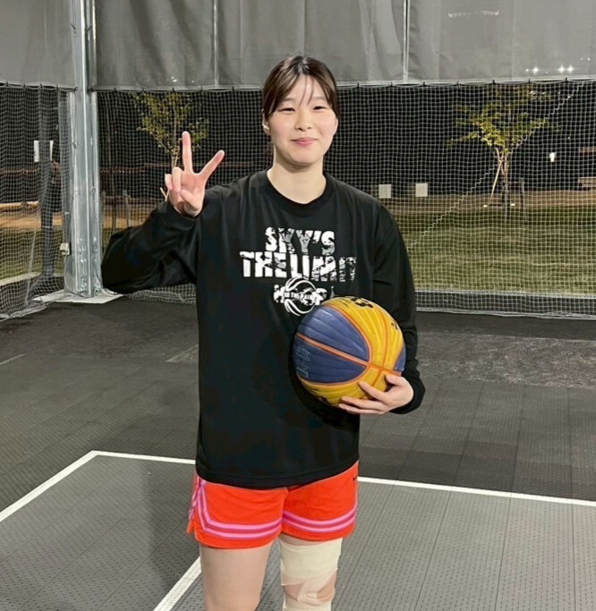
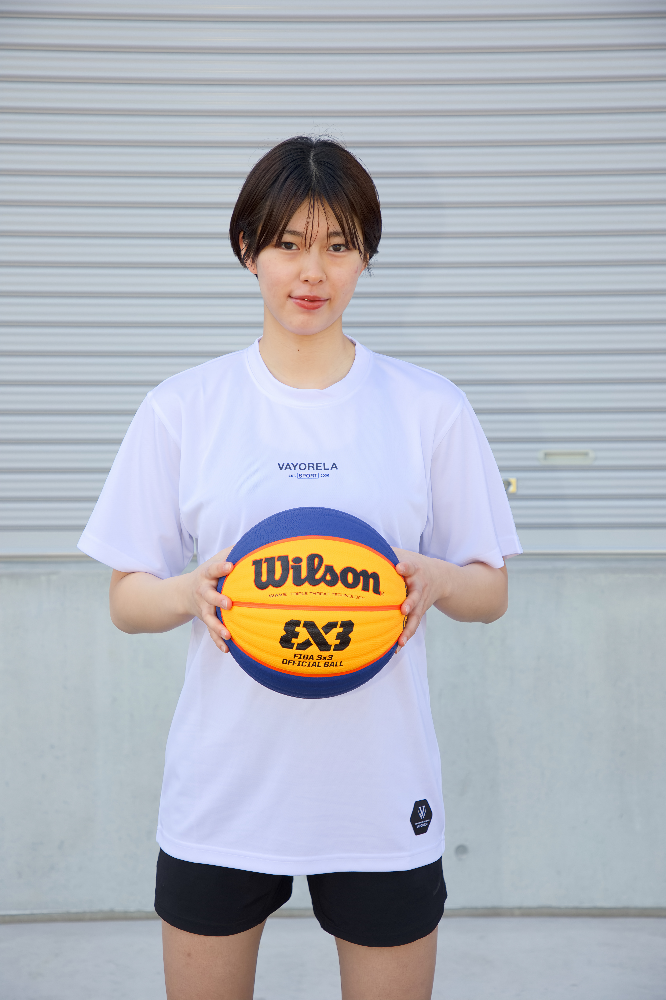

選手紹介
新宿giversの熱い選手たちをご紹介します

福田 桃子
ふくだ ももこ
ポジション：ガード
身長：165cm
出身：東京都
趣味：映画鑑賞、料理

フェレイラ アマンダ ミユキ
ふぇれいら あまんだ みゆき
ポジション：フォワード
身長：172cm
出身：ブラジル
趣味：ダンス、サッカー

長谷川 紗羅
はせがわ さら
ポジション：センター
身長：178cm
出身：神奈川県
趣味：音楽鑑賞、旅行

佐藤 果歩
さとう かほ
ポジション：ガード
身長：162cm
出身：大阪府
趣味：読書、ヨガ

高桑 由実
たかくわ ゆみ
ポジション：フォワード
身長：173cm
出身：京都府
趣味：カフェ巡り、絵画

松本千尋
まつもと ちひろ
ポジション：ガード
身長：164cm
出身：福岡県
趣味：ダンス、ショッピング